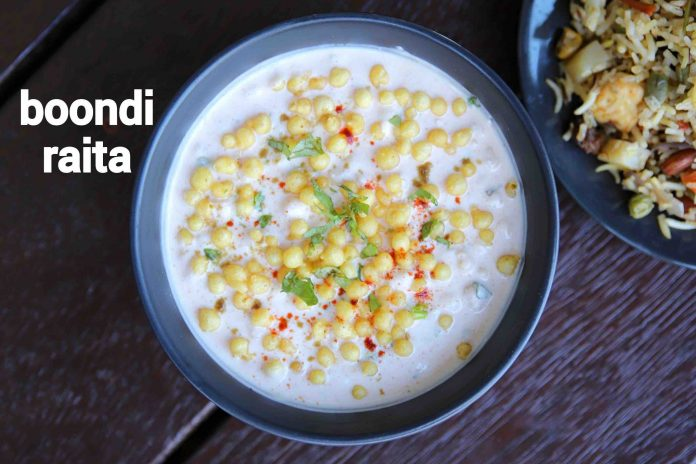

Raita
INGREDIENTS
For Raita
- ½ cup boondi (homemade / store bought)
- 1 cup warm water
- 1 cup curd / yogurt
- ¼ tsp cumin powder / jeera powder
- ¼ tsp kashmiri red chilli powder
- ¼ tsp salt
- 2 tbsp coriander (finely chopped)
INSTRUCTIONS
- firstly, take ½ cup boondi in a bowl. use homemade boondi or store bought boondi.
- soak in 1 cup warm water for 10 minutes.
- drain off the boondi and squeeze off the water gently. keep aside.
- in a small bowl take 1 cup curd, ¼ tsp cumin powder, ¼ tsp chilli powder and ¼ tsp salt.
- whisk and mix making sure a smooth silky consistency curd is attained.
- add in soaked boondi and mix well.also, add 2 tbsp coriander and mix well. top with boondi before serving.
- finally, enjoy boondi raita with pulao, biryani and paratha.

Go to top of page
Home Page